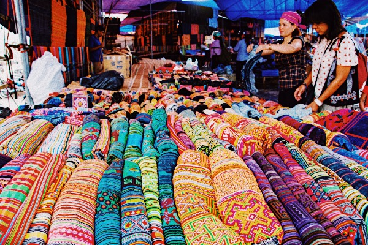

TẠP CHÍ TRANG PHỤC DÂN TỘC

Để làm ra một bộ trang phục truyền thống
của của người Mông phải mất 1-2 năm và trải qua vô số công đoạn
cầu kỳ. Tuy nhiên, thành quả nhận được là một bộ trang phục độc nhất, có những hoa văn mang tính
thẩm mỹ
riêng mà không dân tộc nào có được
Bộ trang phục người Mông ở Sa Pa, cả nam và nữ, khá tương đồng, màu đen là màu chủ đạo, chủ yếu được may bằng vải lanh. Trang phục nam giới gồm có quần, áo dài tay, áo khoác ngoài và 1 mũ. Áo ngoài được thêu ở cổ, mài bằng đá pha sáp ong để tạo độ bóng. Người Mông thường may kiểu quần phăng ống thẳng.
Với trang phục dân tộc phụ nữ H’mông sẽ có nhiều loại và được thiết kế cầu kỳ hơn. Trong đó gồm có váy, áo xẻ ngực, thắt lưng, xà cạp, tấm vải che ở phía trước váy.Nói về sự độc đáo của họa tiết trên trang phục người Mông, chị Sùng Thị Lang, người dân tộc Mông ở xã Tả Van, Thị xã Sa Pa, Lào Cai chia sẻ: “Các hoa văn mà đồng bào người Mông trang trí lên quần áo thường là hình vuông, hình tròn, hình tam giác, các đường thẳng song song zíc zắc, hình cây cỏ, hoa lá, hình công cụ lao đông,... Đặc biệt, hình hoa bí được người dân ở đây sử dụng rất nhiều vì hoa bí là nguồn thực phẩm chủ yếu của họ, nên họ đặc biệt yêu thích và thường sử dụng những hình hoa bí bản to để thêu lên áo cổ, thắt lưng. Ngoài ra, trong khi làm việc, nếu bắt gặp một hình ảnh cô gái yêu thích, cũng có thể thêu lại hình ảnh đó trên chiếc áo của mình”.

Chị Sùng Thị Lang người dân tộc Mông ở xã Tả Van,
Thị xã Sa Pa, Lào Cai
Chị Sùng Thị Lan kể về quá trình nhuộm chàm
Có 3 cách để tạo ra
họa tiết trên
trên trang phục của người Mông là kỹ thuật dùng sáp ong, kỹ
thuật
ghép vải. Trong 3 kỹ thuật tạo họa tiết, kỹ thuật dùng sáp ong là khó nhất, đòi hỏi sự tỉ mỉ rất
cao.
Người Mông nung chảy sáp ong, sau đó dùng bút có đầu làm từ 3 miếng đồng ghép lại chấm vào bát
sáp
ong và vẽ trực tiếp lên vải lanh. Kỹ thuật này đòi hỏi người vẽ hoa văn phải vô cùng tập trung
có
tính chính xác cao bởi nếu đã vẽ ra thì sẽ không sửa được nữa, vì thế người làm công việc này
phải
thật tinh tế, sáng tạo và có tính thẩm mĩ.
Chị Sùng Thị Lan, người dân tộc Mông ở xã Tả Van, Thị xã Sa Pa, Lào Cai kể về quá trình nhuộm
chàm của người dân tộc Mông:
“Người Mông lấy lá chàm đem ngâm và ủ trong thùng lớn được ghép từ gỗ từ 3 ngày đến 4 ngày
tùy vào thời tiết. Sau đó, trộn vôi tôi tiếp tục để 5-7 ngày đêm để lấy cao tràm lắng xuống
đáy thùng, tiếp theo bỏ cao tràm vào bì để lấy nước cốt cao tràm. Công đoạn tiếp chính là
gây thùng tràm, đây là công đoạn khó nhất, người nhuộm lấy do bếp đun từ củi thật chắc
thường dùng củi nhãn hoặc củi hạt dẻ đem ủ với một ít nước từ 3-5 ngày, rồi lấy nước đó đổ
vào thùng nước cốt cao tràm, 10 -20 ngày sau thùng tràm sẽ lên men có thể mang đi nhuộm
vải”.
Sau cùng để có được một miếng vải may quần
áo bóng, đẹp người Mông phải nhuộm thêm một lần nữa với sáp
ong. Sáp ong ngâm trong nước chàm, đến khi nước chuyển màu đen thì đem nhuộm. Người nhuộm dùng sáp ong
bôi lên mặt vải, lăn đá cho đến khi miếng vải cứng, đen bóng. Kỹ thuật này gọi là “nhuộm chàm khô”, nó
giúp cho miếng vải đẹp hơn, áo khi may lên cũng giữ dáng và giữ được lâu hơn. Mỗi hoa văn trên mỗi bộ
trang phục là tâm tư tình cảm của người Mông, những hoa văn đó đã vẽ nên một bức tranh văn hóa riêng
người Mông đen Sapa nói riêng, của dân tộc Việt Nam nói chung.

Mặc thử trang phục người Mông